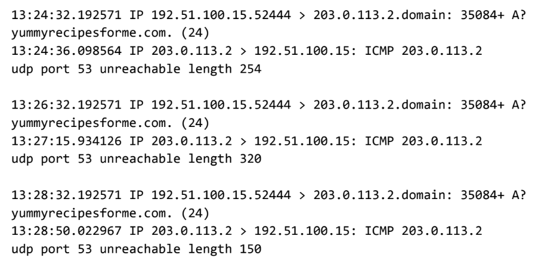

Analysis of the tcpdump logs indicates a failure when accessing port 53 (DNS). ICMP echo replies returned the message "udp port 53 unreachable", indicating that the DNS server was unreachable. This may be caused by firewall restrictions, service downtime, or misconfiguration, resulting in failed domain name resolution for end users.
The issue was initially reported by users receiving a "destination port unreachable" message. The security team executed tcpdump multiple times, consistently observing the same ICMP error responses. These results indicate DNS communication failures that prevent successful domain resolution, rendering the website inaccessible to users.
Recommended next steps: Verify the availability of the DNS server, review firewall rules affecting UDP port 53, and contact the vendor to determine whether a service outage or potential DoS attack is occurring.
